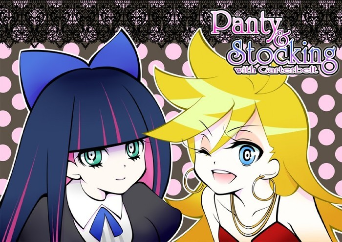
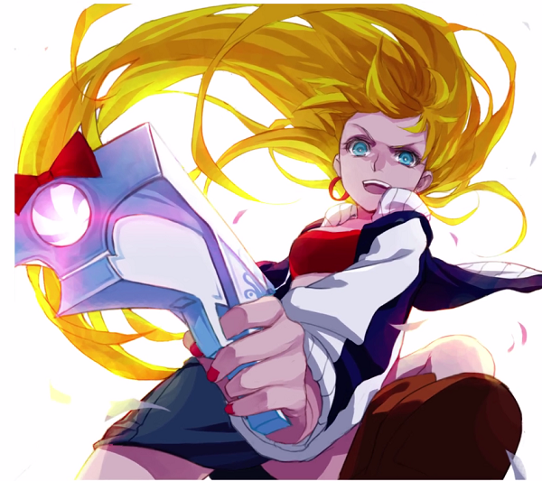

人物介绍④：约瑟芬
魔女名为J.J.，灵感就是你们想象的那样，是吉吉的意思
人设是很久以前召配角时书友提供的，当时一起征了好几个，结果其他的要么是根本没用，有一个幸运的被我用上了，后来发现不对这个人的存在是个BUG，不能用，所以后面就把她淡忘了……（我就知道你们没好好看，所以你们肯定不记得是谁）。约瑟芬是个很常见的西方女名，所以和斯妲琳娜同志重名只是巧合而已。因为这个名字实在是太常见了，以至于她都不会去吐槽一下为什么爱尔娜要救一个和她重名的人。（就像约瑟夫也是个很常见的名字一样，斯大林同志的名字是约瑟夫，德意志第三帝国的戈胖子名字中也带约瑟夫，但谁都不会吐槽他们重名一样）
出生于1433年的法国，得到GEASS和随后得到CODE的过程中被认为是魔女，异端。又恰逢黑暗的中世纪，所以她遭受了很多我不想描述的虐待。因此她对法国，还有基督教有很深的恨意，和阿坦的契约要求便是要阿坦帮她复仇。
她和同为魔女的C.C.打过照面，一起生活过一段时间，在十五世纪末的时候。但因为那个时候的C.C.已经有几百岁了，锻炼了那么多年，拳脚功夫不是盖的，所以后来她们被多名我会抓捕的时候，C.C.能逃脱，约瑟芬不能。
金发蓝眼，身高和爱尔娜五五开，一把年纪了还是飞机场。外貌形象取自《吊带袜天使》中的pa`nty。不过由于我之前所说的，code会剥夺持有者繁殖的欲望，所以她并不会从幸爱中得到快乐，更不可能像pa`nty对吉吉上瘾
